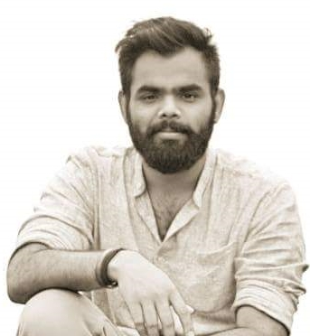
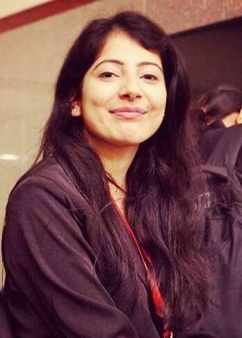
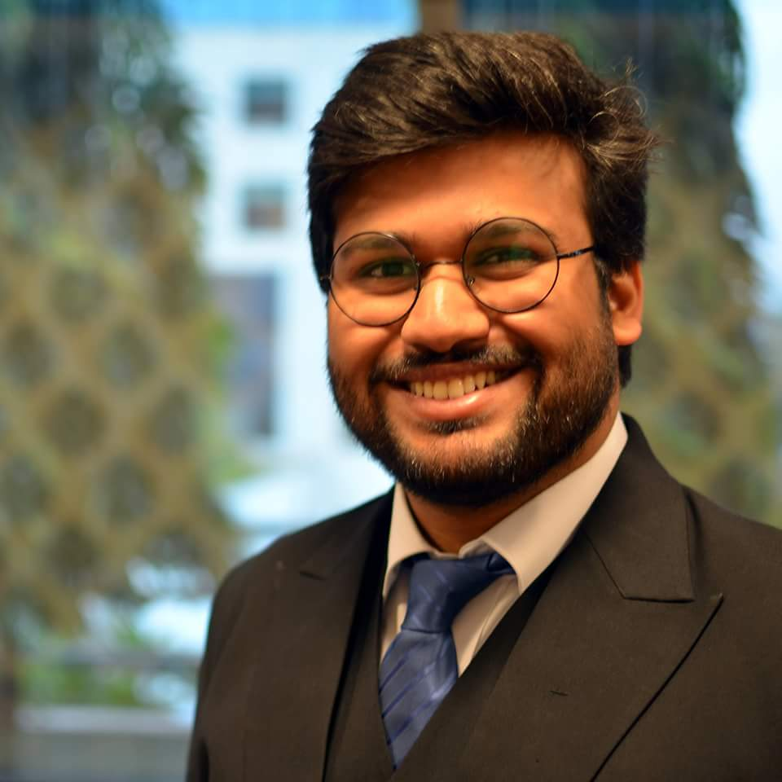
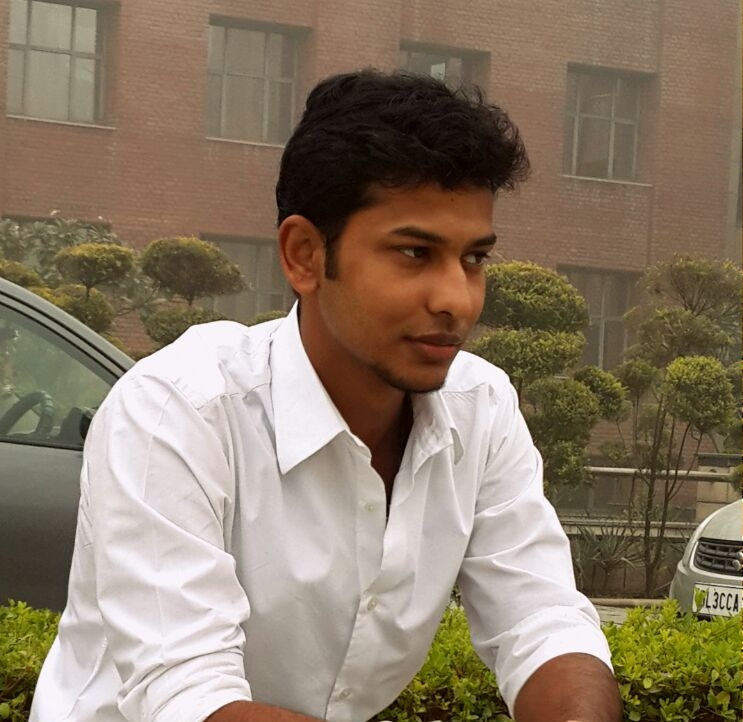
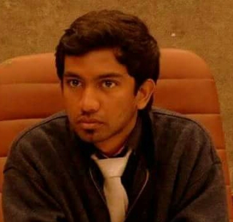
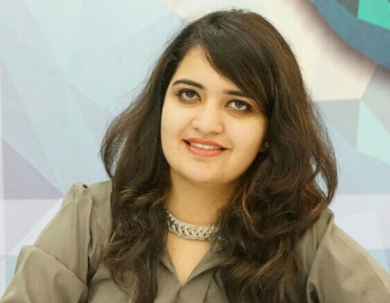

Bordeaux Montaigne University (France)
MUN is the occasion to live the amazing experience of representing a country in a truly international and multicultural environment, debating over hot topics of the current geopolitical agenda, learning to negotiate and compromise to reach consensus, making new friends. No one needs to be a professional of the international relations, or on diplomacy, it is all about learning. Today you might be delegates in your College, you're learning, getting familiar with the concept, its rules, but who knows maybe tomorrow you will be sitting in New-York or Geneva at the UN's headquarters, small steps guide you to higher places. AMIMUN'17 is your opportunity to learn how to be a delegate and to feel the atmosphere of a MUN. Being helped, supported and surrounded by the AMITY's team, which this year is organizing its 6th MUN but also boosted by Indonesia MUN and Young Leaders' Consortium.

University of Manchester
The Model United Nations is an incredibly powerful platform for the youth to understand how the world works and deals with its problems. We cannot, as future world leaders, suggest to build walls as solutions to security threats. We must, instead, find ways to, if not resolve, then at least to endure them together by building bridges and forging lasting and incorruptible relationships. Let's focus on resolving issues that will be discussed over the duration of the conference instead of going back and forth with cause and effect for an unwarranted period of time. I am confident that AMIMUN will prove to be a fine example of the youth's capability to influence and bring about change, as it always has been. I look forward to watching AMIMUN achieve new milestones and setting examples for all other institutions to follow.

Pennsylvania State University
MUNs are a powerful tool to create ripples in the mind of the youth about issues further away from home. It propagates the idea of global community and helps young minds broaden their perspectives on real world issues that need our attention TODAY. I have been associated with AMIMUN since 2014 and before it, I was ignorant to how powerful a medium it can be to spark important discussions and ideas. Since its conception, it has grown every year to become bigger and better. It has always realized the importance of difficult conversations and unconventional committees. I feel honored to be on the advisory panel of AMIMUN'17, and hope that it continues to strive to make a real difference.

Alumnus, Amity University
My journey with MUNs began with AMIMUN 2011, and since then there's been no looking back. I consider it an honor to be a part of AMIMUN'17 as an Advisor. I'm really proud how AMIMUN has become a legacy which has always strived to introduce new ideas, in the form of unconventional committees, which in turn open up an entirely new side of role-based debating. I've been associated with AMIMUN as a delegate, as the Secretary General in 2014, a member of the Executive Board, and as a member of the Advisory Panel, and thus, I can confidently say that AMIMUN has been growing with each year, ever since its inception. I'm really excited about AMIMUN'17 as I'll be chairing the WHO Crisis Committee which is a one-of-it's kind convention of members, and I'm confident this MUN is going to be an absolutely delightful experience for everyone. Cheers!

Alumnus, Amity University
Now in its sixth year, AMIMUN has grown leaps and bounds from its humble beginnings in 2011. Delegates from all over India and abroad, will engage in well-directed debates in any one of our seven committees which are being simulated this year. I expect AMIMUN 2017 to leave a lasting impression on your hearts and minds long after the conference comes to an end. It is indeed my honour and privilege to welcome you all to the 6th edition of Amity International Model United Nations Conference 2017

Alumnus, Amity University
Dear Delegates, since its inception, AMIMUN has set benchmarks with its every edition and will continue to do so. It gives me immense pleasure inviting you all to be a part of AMIMUN'17 to witness the most extravagant conference of the year. The extraordinary committees has always been exalted and we have even better in store for you this year. AMIMUN assures you of a world class experience with Delegates coming from across the globe. We assure you that AMIMUN can be the best possible platform to test your skills as possible future leaders. Cheers! Hope to see you at the conference.

Amity University, Noida
Dear Delegates, since its inception, AMIMUN has through great efforts and outstanding participation has been able to break and create bench mark for itself and for other events to compete with. It gives me immense pleasure inviting you all to be a part of AMIMUN'17 to be the part of the most thrilling/amazing/immersive/acknowledged/great conference of the year. The extraordinary committees has always been exalted and we have even better in store for you this year. AMIMUN assures you of a world class experience with Delegates coming from across the globe. We promise you that AMIMUN will be the best possible platform to find and solidify yourself as to be the leaders of tomorrow. Cheers! Hope to see you at the conference.